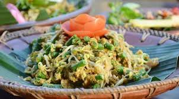

Sate Lilit
Hidangan sate khas Bali yang terbuat dari daging cincang (biasanya ikan, ayam, sapi, atau babi) yang dicampur dengan kelapa parut, santan, dan bumbu rempah. Daging cincang ini kemudian dililitkan pada batang serai atau bambu, lalu dipanggang hingga matang.

Ayam Betutu
Hidangan khas Bali berupa ayam utuh yang dimasak dalam waktu lama dengan bumbu basa genep (campuran rempah kaya seperti bawang merah, bawang putih, cabai, kunyit, jahe, dan lengkuas) dan kemudian dibungkus daun pisang, lalu direbus atau dipanggang hingga bumbu meresap sempurna dan dagingnya sangat empuk.

Lawar
Masakan tradisional Bali yang terbuat dari campuran sayuran, daging cincang, kelapa parut sangrai, dan bumbu khas Bali.
Budaya & Festival

Festival Ogoh-ogoh
Festival Ogoh-Ogoh diadakan sehari sebelum Hari Nyepi, yaitu pada Hari Pengerupukan. Dalam festival ini, masyarakat membuat patung raksasa yang disebut Ogoh-Ogoh, berbentuk makhluk menyeramkan atau simbol kejahatan (bhuta kala). Patung-patung tersebut diarak keliling desa sambil diiringi gamelan bleganjur. Tujuannya adalah untuk mengusir roh jahat dan membersihkan alam semesta dari pengaruh negatif sebelum memasuki tahun baru Saka.
Hari Raya Nyepi
Tahun Baru Saka yang dirayakan oleh umat Hindu Bali dengan cara melakukan Catur Brata Penyepian, yaitu empat pantangan: Amati Geni (tidak menyalakan api), Amati Karya (tidak bekerja), Amati Lelungan (tidak bepergian), dan Amati Lelanguan (tidak bersenang-senang). Seluruh aktivitas dihentikan selama 24 jam. Tujuan utamanya adalah untuk introspeksi diri, penyucian alam, serta menciptakan kedamaian dan keseimbangan batin.
Tradisi Ngaben
Ngaben adalah upacara kremasi dalam adat Bali yang bertujuan untuk mengantarkan roh orang yang meninggal menuju alam baka (moksa). Prosesi ini dianggap sebagai cara untuk membebaskan roh dari keterikatan duniawi. Upacara dilakukan dengan penuh penghormatan, melibatkan arak-arakan, doa, dan pembakaran jenazah menggunakan bade (menara kremasi) dan lembu (wadah berbentuk sapi).